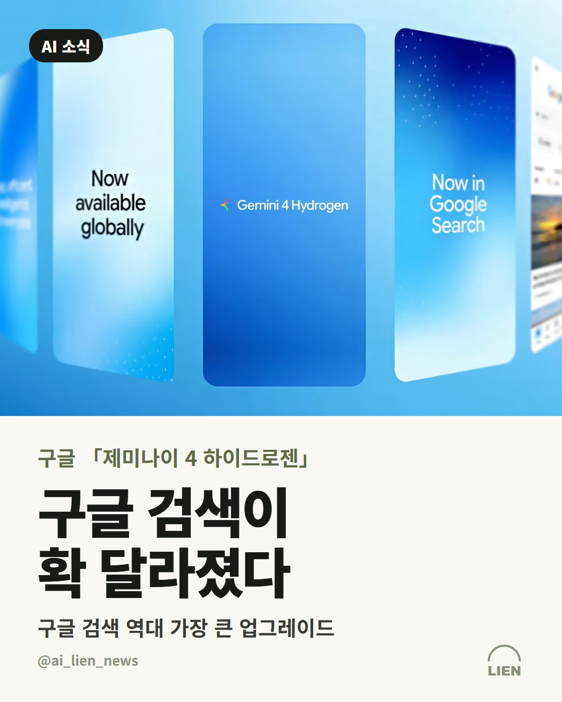
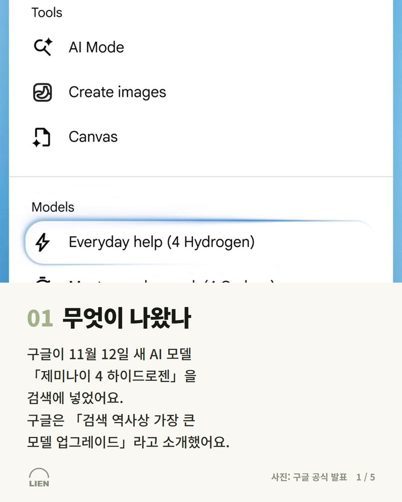
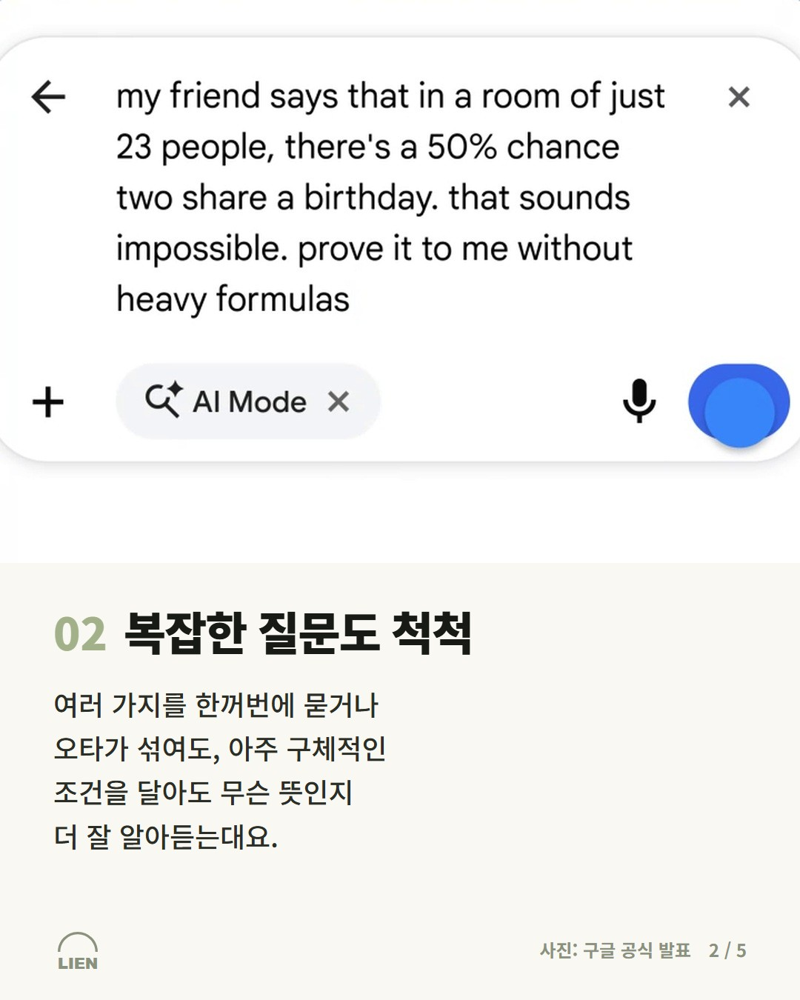
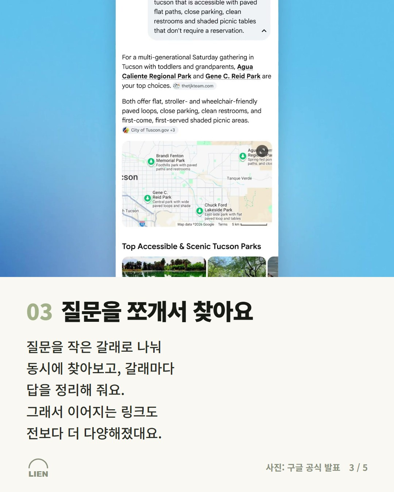
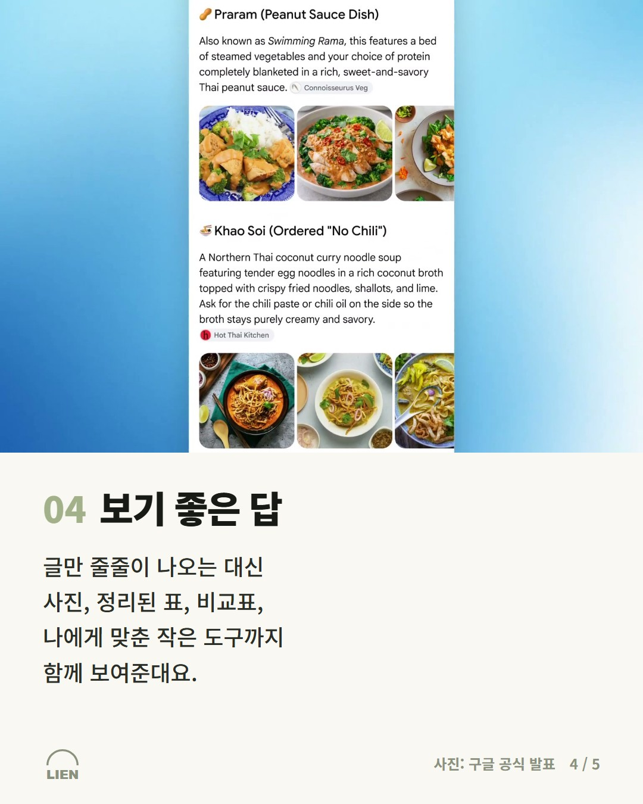
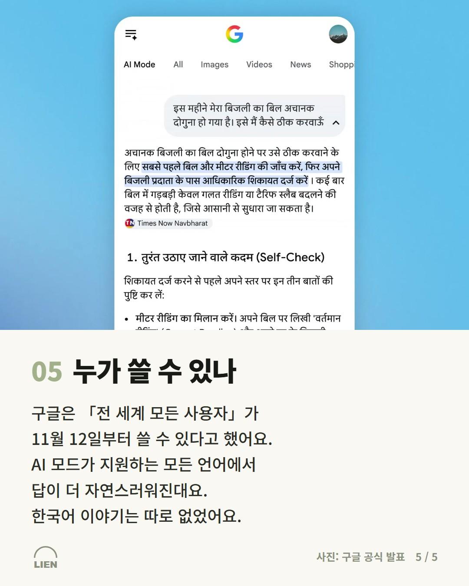
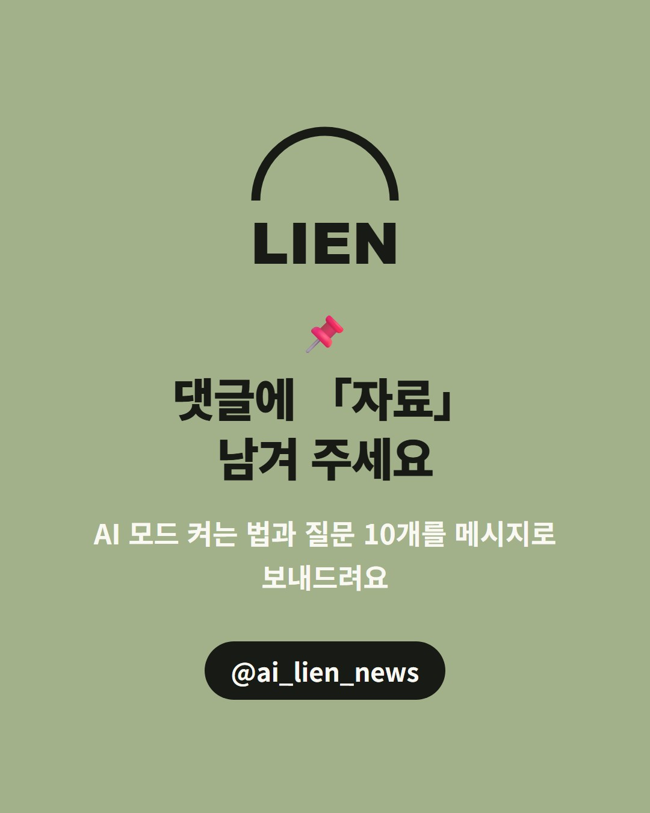

AI 소식구글 검색이 확 달라졌다
2026.11.15 · 카드 7장







옆으로 넘겨 보세요 ›
🔍구글 AI 모드 켜는 법과 질문 10개한국어로 바로 쓰는 5단계 + 복사해 쓰는 질문
검색창에 길게 물어봐도 이제 다 알아듣는대요 🔍
구글이 11월 12일, 새 AI 모델 「제미나이 4 하이드로젠」을 구글 검색에 넣었어요. 구글 검색 담당 부사장 로비 스타인은 이를 "검색 역사상 가장 큰 모델 업그레이드"라고 소개했어요.
📌 무엇이 달라졌나 — 4가지
① 질문을 더 잘 알아들어요
여러 가지를 한 번에 묻는 질문, 오타가 섞인 질문, 조건이 까다로운 질문도 무슨 뜻인지 빠르게 파악해요. 내가 붙인 조건을 더 정확히 따르고, 필요하면 다른 도구도 불러서 써요.
② 질문을 쪼개서 동시에 찾아요
구글은 이걸 '쿼리 팬아웃'이라고 불러요. 질문 하나를 관련된 작은 주제 여러 개로 나눠 한꺼번에 검색한 뒤 모아서 답해요. 그래서 예전엔 못 봤을 사이트까지 더 다양한 링크로 이어준대요.
③ 한눈에 보이는 답
글만 길게 늘어놓는 대신 사진, 정리된 답, 비교표, 내 질문에 맞춰 만든 작은 도구까지 섞어서 보여줘요.
④ 어떤 언어로 물어도
AI 모드가 지원하는 모든 언어에서 답이 더 섬세해졌다고 해요.
📌 공식 시연 영상에 나온 장면
"23명만 모여도 생일이 같은 사람이 있을 확률이 50%라는데, 어려운 공식 없이 증명해 줘" 같은 질문을 던지고, 나들이 장소는 비교표와 지도로, 음식점은 사진과 함께 추천받는 모습이 나와요. 힌디어로 묻는 장면도 있어요.
📌 누가 쓸 수 있나
구글은 "전 세계 모든 사용자"가 11월 12일부터 쓸 수 있다고 했어요. 다만 공식 글에 한국어 이야기나 숫자로 된 성능 비교는 따로 없었어요.
검색창에 단어 몇 개 넣던 습관보다, 이제는 문장으로 길게 물어보는 쪽이 더 잘 통하는 시대예요. 여러분은 요즘 구글과 AI 중 어디에 먼저 물어보세요? 💬
💬 댓글에 「자료」라고 남겨 주시면 AI 모드 켜는 법과 그대로 붙여 넣는 질문 10개를 메시지로 보내드려요
매일 아침 꼭 필요한 AI 소식은 @ai_lien_news
출처 ・ Google 공식 블로그 (2026.11.12)
#AI소식 #구글 #제미나이 #구글검색 #AI검색